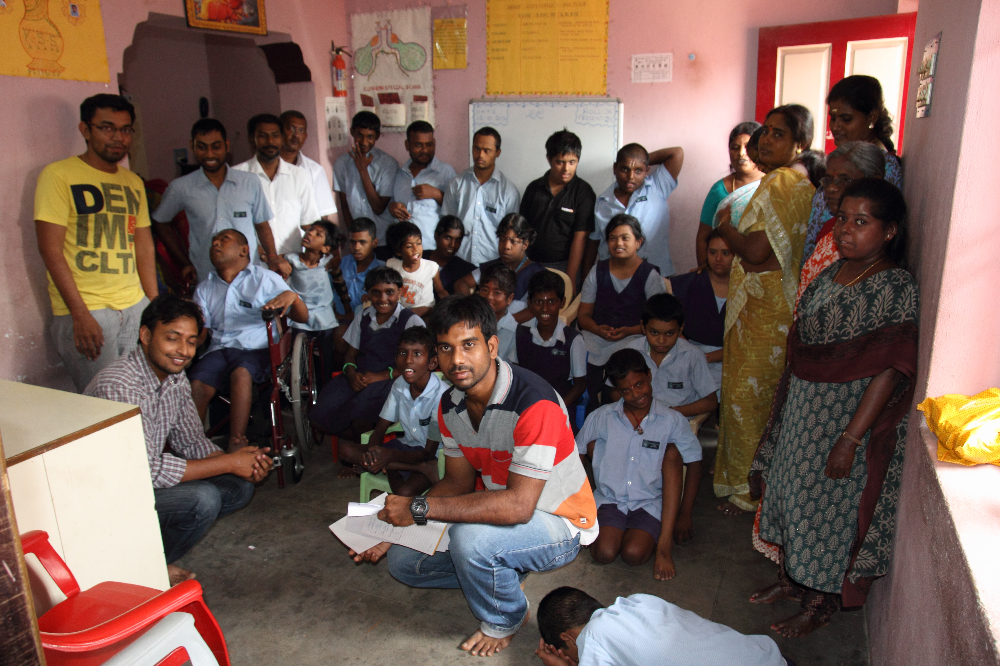
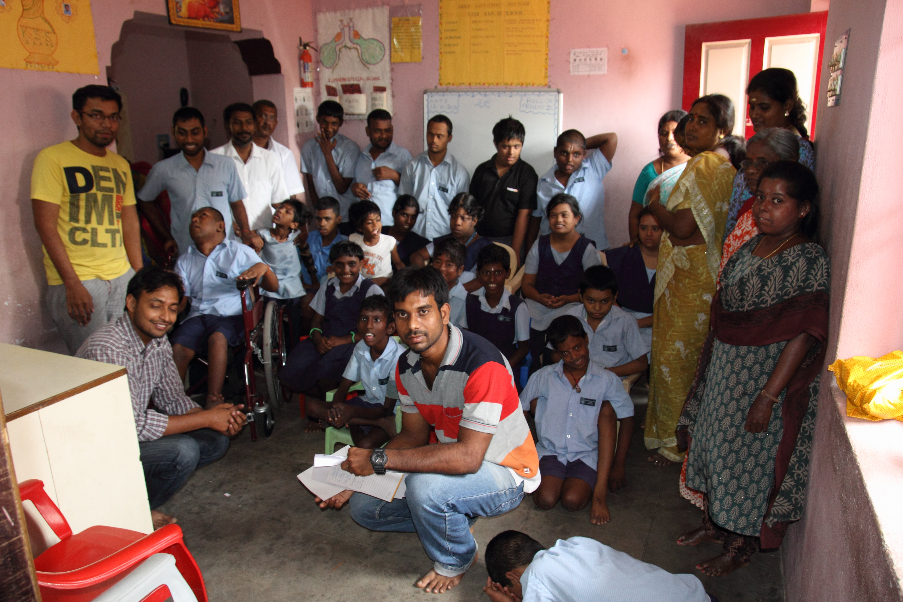

Nallambakkam is a village near Guduvancheri, Chennai. This village is dominated by a quarry which employs most people in it. Public transport hasn’t yet made it to this village.
Krishnaveni, the English teacher from the school, escorted us to the school from the nearest main road about 2km away. It required a lot of ingenuity on Karthik Anandaraman's part to navigate the difficult road to this village. The first thing we saw on entering the school was play equipment worth about 1 lakh donated by the Rotaract club. On getting down from the car, we got ready to take our first photograph of the school. We were swarmed by students who wanted their photograph taken. It felt good to oblige them on this request. We entered the 8th standard classroom and started interacting with the kids. Karthik KP asked each student to tell us their name, what they liked and what they disliked. The students surprised us by telling us not just their names but also their nicknames like Super Sneha and Ultimate Ajith. The students were inclined to answer “I don’t dislike anything.” But for the like part, they eagerly pointed out their best friends among their classmates. The students showed us how they use mind maps to jot down their thoughts on a topic and then used it to write a essay about a given topic. We also saw English activity cards which were written down on the back of a old calendar, an improvisation that resulted when resource constraints met the resourceful Krishnaveni teacher.
We then met the Headmaster of the school, Mr. Santosh. He told us that the school was instituted way back in 1924. He detailed us about how the school was experiencing dire water shortages for both drinking and sanitation. The students were forced to buy bottled water for drinking on days when the panchayat water was not available. Open defecation was common as the water for the rest rooms was also available only intermittently. The HM, then showed us the water pump donated by Cognizant Technology Solutions, to solve this very problem. The issue was the school only had a single phase connection and the motor was rendered un-functional due to the low voltage of 170V. He asked our help in fixing this most urgent of problems which he estimated might cost around Rs.10,000/-. The purifier installed by the government to provide safe drinking water was broken and he needed funds to install a new one.
He also detailed us about the need for new teachers for teaching the new English medium curriculum in the school. He proposed we institute a grant to pay the salary of a new teacher for the school. Krishnaveni teacher then told us about how the village had a high incidence of kidney failure among men. She told us how one bright student dropped out of school when her father died from this ailment. Our hearts went out to this unfortunate student and we wished we could have funded her to continue her education.
The school had a high enrollment of about 230 students inspite of these dropouts. What is more, the school had under the guidance of Krishnaveni teacher even won the prestigious International school award instituted by the British council for outstanding development of international learning in the curriculum. The British council award had brought the school teachers in contact with their London counterparts who visited the school. The teachers keep in touch with their London peers and keep a lively interaction about their learnings on how to better teach children.
More details in this news article.
The school has an active facebook page where you can find photos of the important events.
We left the school with a determination to do what we could to help these very energetic children and their resourceful teachers.
 
